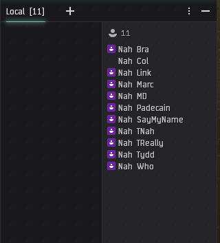

Posting a local or fleet scan:
- Click on a character in the ingame channel you want to scan.
- This can be fleet chat, local, or literally any other ingame channel.
- Press CTRL+a on your keyboard (command+a on a mac) to highlight everyone in the channel.
- Press CTRL+c (command+c on a mac) to copy the selection to the clipboard.
- Click inside of the textbox on this page and press CTRL+v (command+v on a mac) to paste the data.
- Click Submit!

This div will display data output!